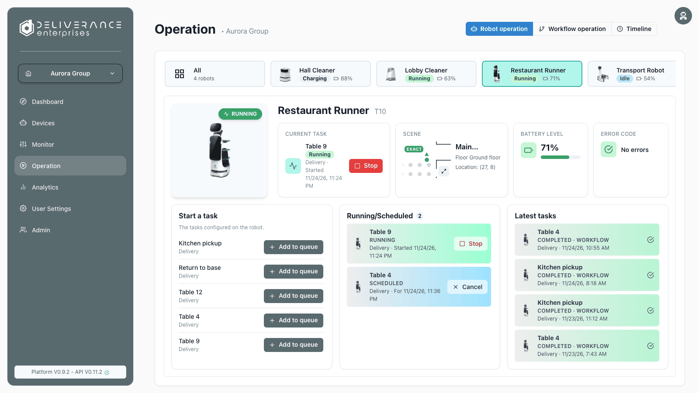
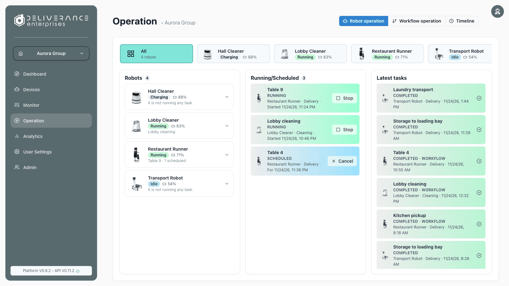

运行（Operation）：机器人运行¶
向机器人下达任务并显示其执行情况。仅对 管理员 显示。包含三个视图：机器人运行（Robot operation）、工作流运行（Workflow operation，见工作流）和 时间线（Timeline）。
机器人运行（Robot operation）¶

在顶部选择机器人。下方显示当前任务、场景、电量和错误代码，以及三个面板：启动任务（Start a task）、进行中/已排程（Running/Scheduled）和 最近任务（Latest tasks）。工作流（Workflow）标签标记由工作流启动的任务。
全部（All）汇集所有机器人：

启动任务¶

列表包含机器人中配置的任务；如果机器人不上报这些任务，则包含其最近 90 天内执行过的任务。启动（Start）启动任务；如果机器人正忙，加入队列（Add to queue）会让任务等待。始终要求确认。
真实的机器人可能会移动
确认后，机器人会尽快开始执行。确认之前，先检查该区域已清空。
未启动的已排程任务会说明等待原因：机器人忙碌、离线、处于急停状态、有故障、已暂停或正在充电。如果期限届满仍未执行，任务会标记为 未执行（Not executed）。
停止或取消¶

- 停止（Stop，进行中的任务）：请求机器人停止。在机器人确认之前，任务仍在进行中，并标记为 已请求停止（Stop requested）。
- 取消（Cancel，已排程的任务）：机器人不会执行该任务。
这不是紧急停止
停止 可能需要一段时间，而且并非所有机器人或连接器都支持。如果机器人必须立即停下，必须在现场将其停止。
连接器错误¶
如果机器人的连接器没有执行所请求的操作，会出现 连接器错误（Connector error）提示，并注明任务名称：
- ……未停止（...was not stopped）：连接器没有停止任务，机器人可能仍在移动。可以用 重试（Try again）再次尝试。
- ……未被接收（...has not been taken）：连接器没有接收任务。连接器可能未在运行，或未准备好启动任务，或者机器人拒绝该任务。
时间线（Timeline）¶

按日或按周以图表和表格显示每台机器人的任务以及工作流的运行。下拉菜单可显示全部、仅任务或仅工作流。如果正在查看其他组织，则只显示任务：工作流属于所属组织。